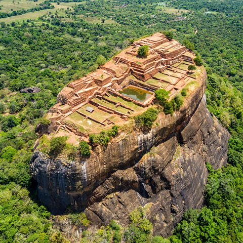

Our Holiday Tours
1. Whale Watching in Mirissa

Experience the breathtaking sight of blue whales and dolphins on the southern coast of Sri Lanka in Mirissa. Best viewed from November to April.
2. Nuwara Eliya Tea Estates

Explore lush green tea plantations in the cool climate of Nuwara Eliya. Walk through tea trails, visit factories, and enjoy breathtaking views of the hill country.
3. Sigiriya Rock Fortress

Climb the 5th-century fortress of King Kashyapa and witness stunning frescoes, landscaped gardens, and 360-degree views from the summit.
4. Temple of the Tooth, Kandy

Visit Sri Lanka's most sacred Buddhist temple housing the relic of the tooth of the Buddha. Explore cultural rituals and the beautiful lakeside town of Kandy.
5. Tea Garden Trails
Wander through rolling hills and misty plantations. Enjoy a serene experience amidst the green valleys of central Sri Lanka.
6. Colonial Galle Fort
Step into history at this UNESCO World Heritage site. Galle Fort combines colonial charm, art galleries, boutique stores, and scenic sunset views.
7. Ella Adventure

Hike Little Adam’s Peak, walk across Nine Arches Bridge, and enjoy scenic train rides through the highlands. Ella is a haven for nature lovers and trekkers.